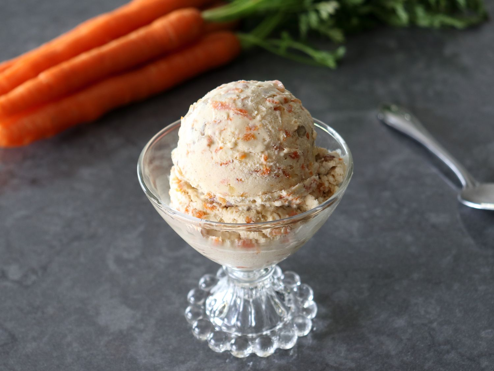

Tasty Carrot Cake Ice Cream
Description
Carrots and ice cream? Just trust me on this one. This no-churn, no ice cream maker recipe
will have you coming back for more.

Ingredients
- 2 tbsps unsalted butter
- 1 1/4 cups finely shredded carrots
- 1/3 cup brown sugar
- 1/4 tsp kosher salt
- 1 1/4 tsps cinnamon
- 1/2 tsp ground ginger
- 4 oz soft cream cheese
- 1 can (14 oz) sweetened condensed milk
- 1 tsp vanilla extract
- 2 1/4 cups heavy cream
- 1/3 cup toasted chopped pecans
- 1/3 cup chopped walnuts
Steps
- Combine butter, carrots, brown sugar, and salt in a saucepan over medium heat. Cook and stir until carrots are just getting tender, about 5 minutes. Season with cinnamon and ginger. Cook for 1 more minute. Turn off heat, and let cool.
- Meanwhile, whisk together cream cheese, sweetened condensed milk, and vanilla extract in a bowl until smooth. Stir in cooled carrot mixture and transfer to the refrigerator until needed.
- Beat cream in a chilled glass or metal bowl with an electric mixer until medium-stiff peaks form. Add cooled carrot-cream cheese mixture and whisk into the whipped cream. Fold in chopped walnuts and pecans with a spatula.
- Transfer mixture into a chilled airtight container and place a piece of plastic wrap directly onto the mixture. Cover with a lid and freeze until solid, at least 4 hours, but best overnight.
Credits: Chef John, allrecipes.com